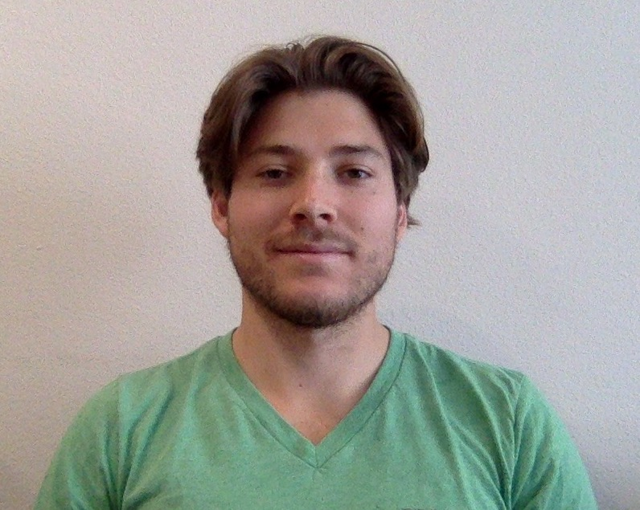

About Me
 Kyle was born and raised in southern California. He enjoys playing Ultimate Frisbee, solving puzzles, and cooking. He is passionate about health, fitness, and overall well-being; all of which he hopes to use his development skills to promote.